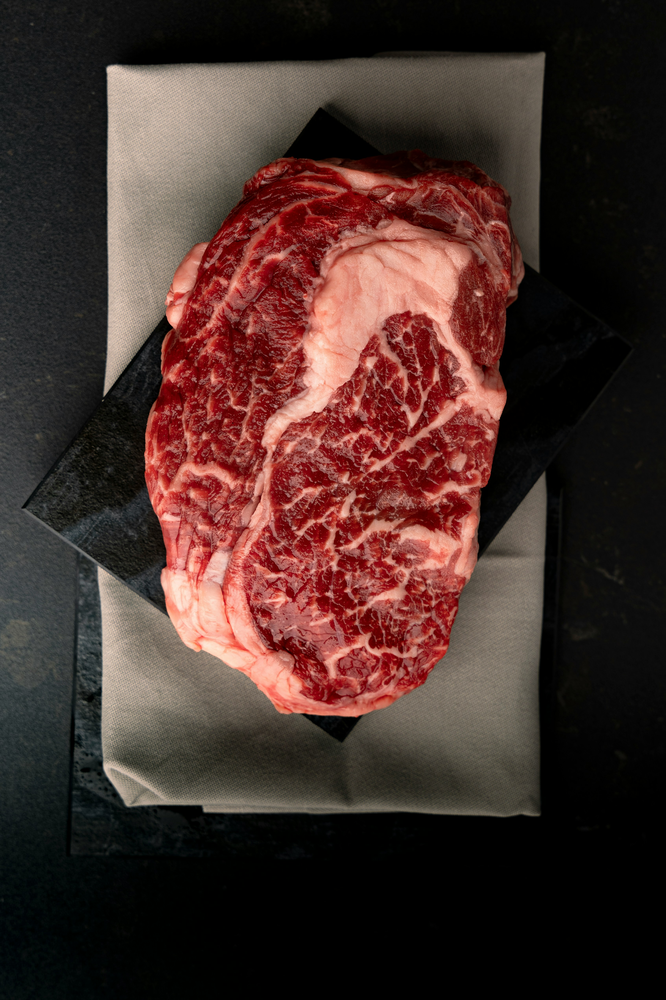

Steak Recipe

Description
A classic steak is a cut of beef that is grilled or pan-seared to perfection.
It's a simple dish that highlights the quality of the meat and the skill of the cook.
Ingredients
- 2 ribeye steaks (about 1 inch thick)
- Salt and pepper to taste
- 2 tablespoons of olive oil
- 2 cloves of garlic, minced
- 2 sprigs of fresh rosemary (optional)
Steps
- Take the steaks out of the refrigerator and let them come to room temperature for about 30 minutes.
- Season both sides of the steaks generously with salt and pepper.
- Heat a cast-iron skillet or grill pan over high heat until it's very hot.
- Add the olive oil to the pan and swirl to coat.
- Place the steaks in the pan and sear for 3-4 minutes on each side for medium-rare, or longer if you prefer your steak more done.
- Add the minced garlic and rosemary to the pan during the last minute of cooking for added flavor.
- Remove the steaks from the pan and let them rest for 5 minutes before slicing and serving.
Back to Home